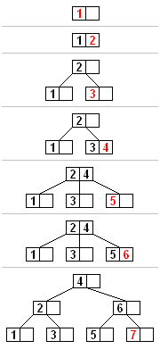
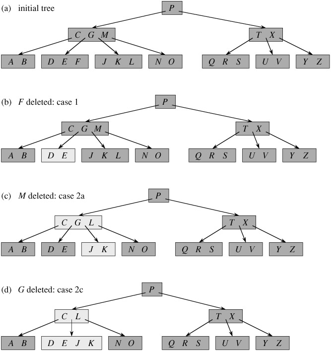

B-tree is a tree data structure that keeps data sorted and allows searches,sequential access, insertions, and deletions in logarithmic time. The B-tree is a generalization of a binary search tree in that a node can have more than two children. Unlike self-balancing binary search trees, the B-tree is optimized for systems that read and write large blocks of data. It is commonly used in databases and file-systems
B-树是一类树，包括B-树、B+树、B*树等，是一棵自平衡的搜索树，它类似普通的平衡二叉树，不同的一点是B-树允许每个节点有更多的子节点。B-树是专门为外部存储器设计的，如磁盘，它对于读取和写入大块数据有良好的性能，所以一般被用在文件系统及数据库中。
数据结构之B-Tree
外存储器—磁盘
计算机存储设备一般分为两种：内存储器(main memory)和外存储器(external memory)。 内存存取速度快，但容量小，价格昂贵，而且不能长期保存数据(在不通电情况下数据会消失)。
外存储器—磁盘是一种直接存取的存储设备(DASD)。它是以存取时间变化不大为特征的。可以直接存取任何字符组，且容量大、速度较其它外存设备更快。
磁盘的读/写原理和效率
磁盘是一个扁平的圆盘(与电唱机的唱片类似)。盘面上有许多称为磁道的圆圈，数据就记录在这些磁道上。磁盘可以是单片的，也可以是由若干盘片组成的盘组，每一盘片上有两个面。
磁盘上数据必须用一个三维地址唯一标示：柱面号、盘面号、块号(磁道上的盘块)。
读/写磁盘上某一指定数据需要下面3个步骤：
- 首先移动臂根据柱面号使磁头移动到所需要的
柱面上，这一过程被称为定位或查找。 - 根据盘面号来确定指定盘面上的
磁道。 - 盘面确定以后，盘片开始旋转，将指定块号的磁道段移动至
磁头下。
经过上面三个步骤，指定数据的存储位置就被找到。这时就可以开始读/写操作了。
访问某一具体信息，由3部分时间组成：
查找时间(seek time)Ts: 完成上述步骤(1)所需要的时间。这部分时间代价最高，最大可达到0.1s左右。等待时间(latency time)Tl: 完成上述步骤(3)所需要的时间。由于盘片绕主轴旋转速度很快，一般为7200转/分(电脑硬盘的性能指标之一, 家用的普通硬盘的转速一般有5400rpm(笔记本)、7200rpm几种)。因此一般旋转一圈大约0.0083s。传输时间(transmission time)Tt: 数据通过系统总线传送到内存的时间，一般传输一个字节(byte)大概0.02us=2*10^(-8)s
磁盘读取数据是以盘块(block)为基本单位的。位于同一盘块中的所有数据都能被一次性全部读取出来。而磁盘IO代价主要花费在查找时间Ts上。
因此我们应该尽量将相关信息存放在同一盘块，同一磁道中。或者至少放在同一柱面或相邻柱面上，以求在读/写信息时尽量减少磁头来回移动的次数，避免过多的查找时间Ts。
在大规模数据存储方面，大量数据存储在外存磁盘中，而在外存磁盘中读取/写入块(block)中某数据时，首先需要定位到磁盘中的某块，如何有效地查找磁盘中的数据，需要一种合理高效的外存数据结构，就是下面所要重点阐述的B-Tree结构，以及相关的变种结构：B+-Tree结构和B*-Tree结构。
B-Tree（Balanced Tree）
B-tree is a tree data structure that keeps data sorted and allows
searches,sequential access, insertions, and deletions in logarithmic time. The B-tree is a generalization of a binary search tree in that a node can have more than two children. Unlike self-balancing binary search trees, the B-tree is optimized for systems thatread and write large blocks of data. It is commonly used indatabasesandfile-systems.
B-Tree的定义
B 树是为了磁盘或其它存储设备而设计的一种多叉（相对于二叉，B树每个内结点有多个分支，即多叉）平衡查找树。B-Tree在降低磁盘I/0操作方面要比红黑树更好一些。许多数据库系统都一般使用B树或者B树的各种变形结构。
B树与红黑树最大的不同在于，B树的结点可以有许多子女，从几个到几千个。
为什么又说B树与红黑树很相似呢？
因为B-Tree与红黑树一样，一棵含n个结点的B树的高度也为O（lgn），但可能比一棵红黑树的高度小许多，应为它的分支因子比较大。所以，B树可以在O（logn）时间内，实现各种如插入（insert），删除（delete）等动态集合操作。
如下图所示，即是一棵B树，一棵关键字为英语中辅音字母的B树，现在要从树种查找字母R（包含n[x]个关键字的内结点x，x有n[x]+1]个子女（也就是说，一个内结点x若含有n[x]个关键字，那么x将含有n[x]+1个子女）。
所有的叶结点都处于相同的深度，带阴影的结点为查找字母R时要检查的结点）：
B-Tree的性质
一颗m阶树需满足以下条件：
- m阶树中每个节点最多有m个孩子；
- 树中每个非叶子节点（除了根节点）至少有ceil(m/2)个孩子；
- 若根节点不是叶子节点，则至少有2个孩子；
- 有k个孩子的非叶子节点包含k-1个key；
- 所有的叶子节点在同一层级；
B树中的每个结点根据实际情况可以包含大量的关键字信息和分支(当然是不能超过磁盘块的大小，根据磁盘驱动(disk drives)的不同，一般块的大小在1k~4k左右)；这样
树的深度降低了，这就意味着查找一个元素只要很少结点从外存磁盘中读入内存，很快访问到要查找的数据。
数据结构（源码）

A B Tree insertion example with each iteration. The nodes of this B tree have at most 3 children
B-Tree
1 | public class BTree<T extends Comparable<T>> implements ITree<T> { |
B-Tree节点
1 | private static class Node<T extends Comparable<T>> { |
新增节点
1 | public boolean add(T value) { |
分裂节点
1 | /** |
删除节点

1 | public T remove(T value) { |
当节点key个数 小于 最小key个数时， 将孩子节点的key与父节点进行合并1
2
3
4
5
6
7
8
9
10
11
12
13
14
15
16
17
18
19
20
21
22
23
24
25
26
27
28
29
30
31
32
33
34
35
36
37
38
39
40
41
42
43
44
45
46
47
48
49
50
51
52
53
54
55
56
57
58
59
60
61
62
63
64
65
66
67
68
69
70
71
72
73
74
75
76
77
78
79
80
81
82
83
84
85
86
87
88
89
90
91
92
93
94
95
96
97
98
99
100
101
102
103/**
* 当节点key个数 小于 最小key个数时， 将孩子节点的key与父节点进行合并
*
* @param node 与节点的孩子节点进行合并
*/
private boolean combined(Node<T> node) {
Node<T> parent = node.parent;
int index = parent.indexOf(node);
int indexOfLeftNeighbor = index - 1;
int indexOfRightNeighbor = index + 1;
Node<T> rightNeighbor = null;
//右兄弟节点key个数
int rightNeighborSize = -minChildrenSize;
if (indexOfRightNeighbor < parent.numberOfChildren()) {
rightNeighbor = parent.getChild(indexOfRightNeighbor);
rightNeighborSize = rightNeighbor.numberOfKeys();
}
//从兄弟节点借key
if (rightNeighbor != null && rightNeighborSize > minKeySize) {
//尝试从右兄弟节点借key
T removeValue = rightNeighbor.getKey(0);
int prev = getIndexOfPreviousValue(parent, removeValue);
T parentValue = parent.removeKey(prev);
T neighborValue = rightNeighbor.removeKey(0);
node.addKey(parentValue);
parent.addKey(neighborValue);
if (rightNeighbor.numberOfChildren() > 0) {
node.addChild(rightNeighbor.removeChild(0));
}
} else {
Node<T> leftNeighbor = null;
//左兄弟节点key个数
int leftNeighborSize = -minChildrenSize;
if (indexOfLeftNeighbor >= 0) {
leftNeighbor = parent.getChild(indexOfLeftNeighbor);
leftNeighborSize = leftNeighbor.numberOfKeys();
}
if (leftNeighbor != null && leftNeighborSize > minKeySize) {
//尝试从左兄弟节点借key
T removeValue = leftNeighbor.getKey(leftNeighbor.numberOfKeys() - 1);
int prev = getIndexOfNextValue(parent, removeValue);
T parentValue = parent.removeKey(prev);
T neighborValue = leftNeighbor.removeKey(leftNeighbor.numberOfKeys() - 1);
node.addKey(parentValue);
parent.addKey(neighborValue);
if (leftNeighbor.numberOfChildren() > 0) {
node.addChild(leftNeighbor.removeChild(leftNeighbor.numberOfChildren() - 1));
}
} else if (rightNeighbor != null && parent.numberOfKeys() > 0) {
//借不到key，尝试与右兄弟节点key合并
T removeValue = rightNeighbor.getKey(0);
int prev = getIndexOfPreviousValue(parent, removeValue);
T parentValue = parent.removeKey(prev);
parent.removeChild(rightNeighbor);
node.addKey(parentValue);
for (int i = 0; i < rightNeighbor.keysSize; i++) {
T v = rightNeighbor.getKey(i);
node.addKey(v);
}
for (int i = 0; i < rightNeighbor.childrenSize; i++) {
Node<T> c = rightNeighbor.getChild(i);
node.addChild(c);
}
if (parent.parent != null && parent.numberOfKeys() < minKeySize) {
//删除key后导致父节点key数小于最小key个数，继续重平衡
this.combined(parent);
} else if (parent.numberOfKeys() == 0) {
//父节点没有key了，将节点作为新的root节点
node.parent = null;
root = node;
}
} else if (leftNeighbor != null && parent.numberOfKeys() > 0) {
//借不到key，尝试与左兄弟节点key合并
T removeValue = leftNeighbor.getKey(leftNeighbor.numberOfKeys() - 1);
int prev = getIndexOfNextValue(parent, removeValue);
T parentValue = parent.removeKey(prev);
parent.removeChild(leftNeighbor);
node.addKey(parentValue);
for (int i = 0; i < leftNeighbor.keysSize; i++) {
T v = leftNeighbor.getKey(i);
node.addKey(v);
}
for (int i = 0; i < leftNeighbor.childrenSize; i++) {
Node<T> c = leftNeighbor.getChild(i);
node.addChild(c);
}
if (parent.parent != null && parent.numberOfKeys() < minKeySize) {
//删除key后导致父节点key数小于最小key个数，继续重平衡
this.combined(parent);
} else if (parent.numberOfKeys() == 0) {
//父节点没有key了，将节点作为新的root节点
node.parent = null;
root = node;
}
}
}
return true;
}
查询节点
性能
时间复杂度：O(log(n))
空间复杂度：O(n)
应用场景
B和B+主要用在文件系统以及数据库中做索引等，
Advantages of B-tree usage for databases
The B-tree uses all of the ideas described above. In particular, a B-tree:
- keeps keys in sorted order for sequential traversing
- uses a hierarchical index to minimize the number of disk reads
- uses partially full blocks to speed insertions and deletions
- keeps the index balanced with a recursive algorithm
- In addition, a B-tree minimizes waste by making sure the
interior nodes are at least half full.A B-tree canhandle an arbitrary number of insertions and deletions.